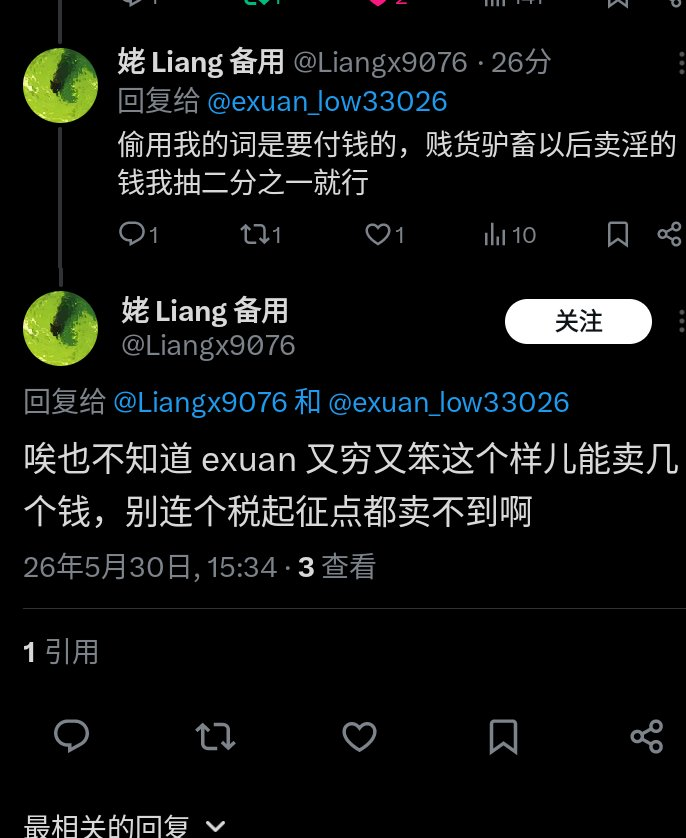
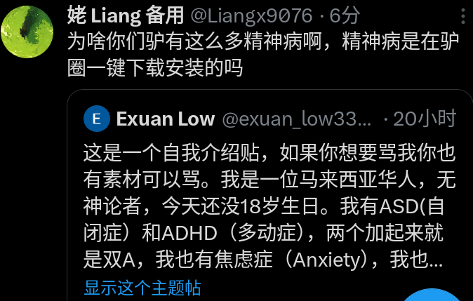

サイバー環状線
@CyberKanjousen
@exuan_low33026 @Handicap137405 对待这种人，最有效的方式是举报和屏蔽。
这种「女权主义者」实际上就是靠以网暴他人为乐的畜生。


Exuan Low
@exuan_low33026
@CyberKanjousen @Handicap137405 他们连男人也不敢打就打我们女人，给你看一看。这名用户散布关于我的肮脏谣言，对我进行性骚扰，告诉我要成为一名性工作者，却说自己是女权主义者，还拿精神疾病开玩笑。你可以帮我吗？ https://t.co/19nWHxmffZ